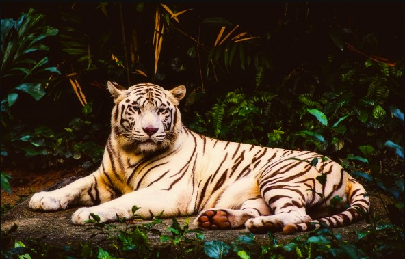
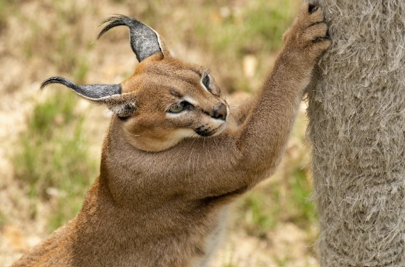
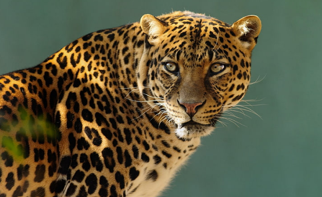

Tiger
Der Tiger (Panthera tigris) ist eine in Asien verbreitete Großkatze. Er ist aufgrund seiner Größe und des charakteristischen dunklen Streifenmusters auf goldgelbem bis rotbraunem Grund unverwechselbar. Es gibt acht bis neun Unterarten.Tiger leben in der Regel einzelgängerisch und ernähren sich überwiegend von größeren Huftieren. Dabei bewohnen sie unterschiedlichste Lebensräume, wie tropische Regenwälder, Grasländer, Sumpfgebiete oder boreale Wälder.


Puma
Der Puma (Puma concolor) ist die viertgrößte Art der Katzen (Felidae) nach dem Tiger, dem Löwen und dem Jaguar, wird jedoch den Kleinkatzen als deren größte Art zugeordnet. Er ist in weiten Teilen Nord-, Mittel- und Südamerikas verbreitet und dort unter zahlreichen weiteren Namen bekannt; für viele davon gibt es auch im Deutschen eine Entsprechung: Silberlöwe, Berglöwe oder Kuguar (englisch cougar, aus französisch couguar).
Jaguar
Der Tiger (Panthera tigris) ist eine in Asien verbreitete Großkatze. Er ist aufgrund seiner Größe und des charakteristischen dunklen Streifenmusters auf goldgelbem bis rotbraunem Grund unverwechselbar. Es gibt acht bis neun Unterarten.Tiger leben in der Regel einzelgängerisch und ernähren sich überwiegend von größeren Huftieren. Dabei bewohnen sie unterschiedlichste Lebensräume, wie tropische Regenwälder, Grasländer, Sumpfgebiete oder boreale Wälder.
